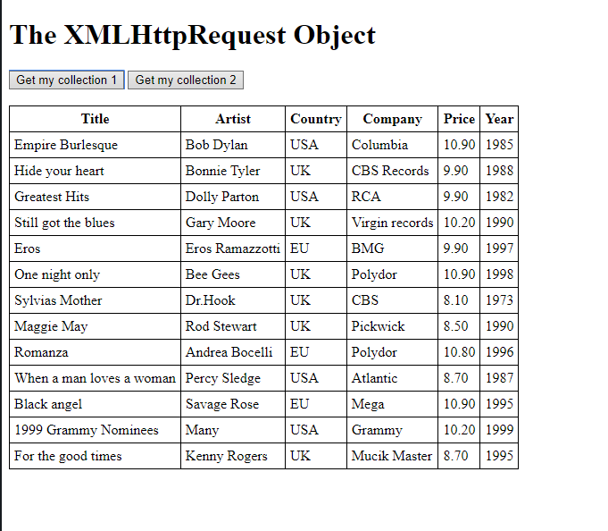
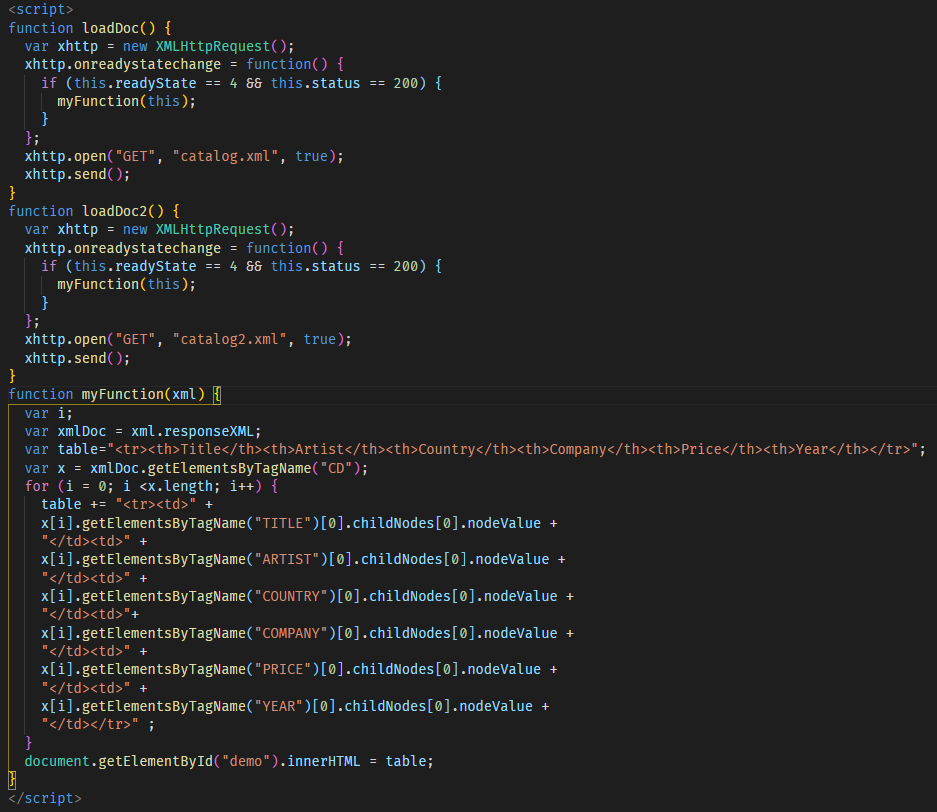
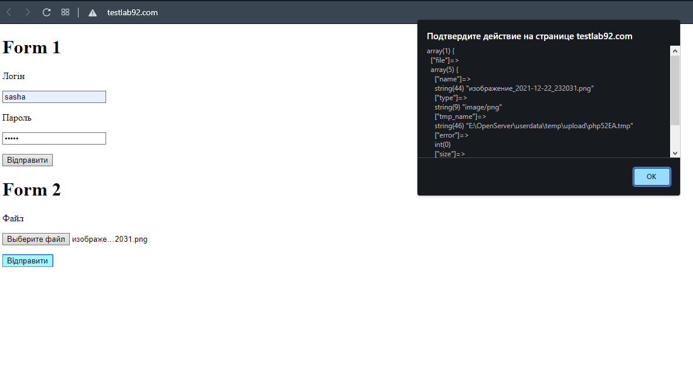
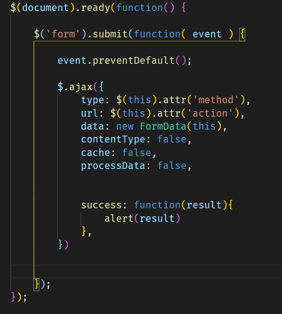

Лабораторна робота 3
Тема:
ВИКОРИСТАННЯ В СЦЕНАРІЯХ JAVASCRIPT БІБЛІОТЕК КРОС-БРАУЗЕРНИХ ІНТЕРФЕЙСІВ МЕТОДІВ DOM. БІБЛІОТЕКА JQUERY UI. ЗАСОБИ НАЛАГОДЖЕННЯ І ТЕСТУВАННЯ СЦЕНАРІЇВ JAVASCRIPT.
Мета:
придбати практичні навички роботи jQuery UI, вміти додавати до сайту динамічні елементи цієї бібіліотеки, плагін галереї UniteGallery, кнопки соціальних мереж, інформери та інше.
Розташування WEB проекту:
GitHubЩо таке ajax?
AJAX – це термін, який визначає як можна використовуючи існуючі технології отримувати дані з сервера у фоновому режимі та використовувати їх для оновлення сторінки (без перезавантаження).



